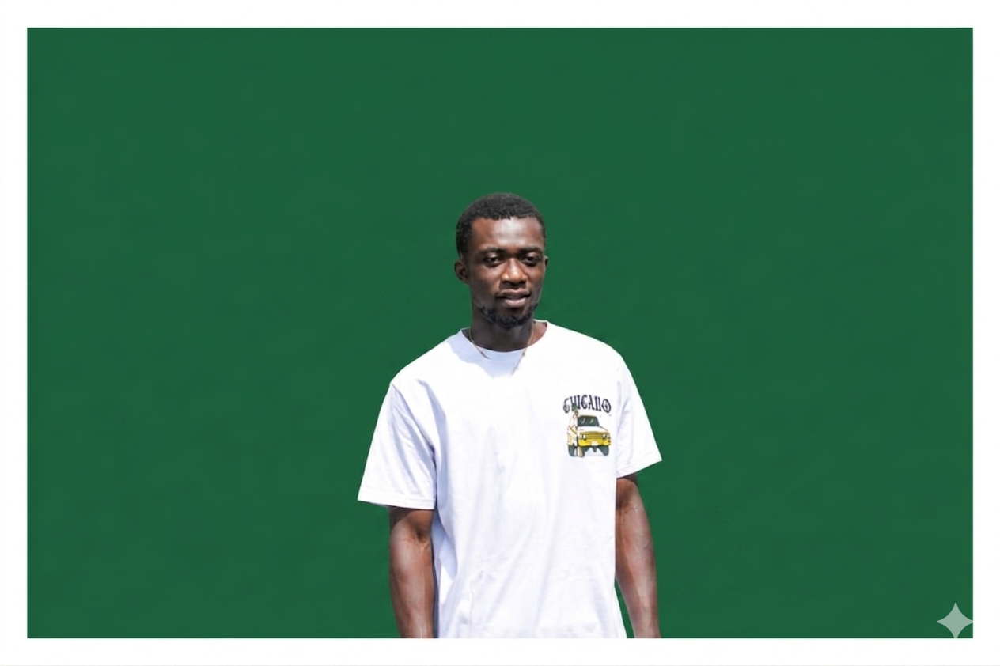

About Me

Course Overview
Welcome to my Data Communication study summary. Over this course we explored how information is encoded, transmitted, and protected across different media—from Morse telegraphy to modern wireless networks and cryptographic security.
Use the navigation menu above to explore each topic area on its own page. We are building this site step by step:
Topics We Will Cover
- Introduction to Data Communication
- Networking Fundamentals
- Network Reference Models & Transmission Media
- Satellite Communication Systems
- Signals
- Wireless Networks and Technologies
- CIA Triad and Cryptography
- Data Security, Network Security, and Cybersecurity
- Telegraph and Morse Code
Read full summaries on the Topics page (Steps 1–6).
What Inspires Me
The evolution of communication—from Samuel Morse's telegraph to today's global internet—inspires me to understand both the history and the science behind every bit that travels across a wire or through the air.
I am also inspired by the One Million Coders initiative and my journey in web development, where I can turn what I learn into pages like this one that others can read and learn from.
Building this site for the assignment taught me how HTML, CSS, and clear navigation help explain technical ideas. I hope to keep contributing to open learning through One Million Coders and my GitHub projects.